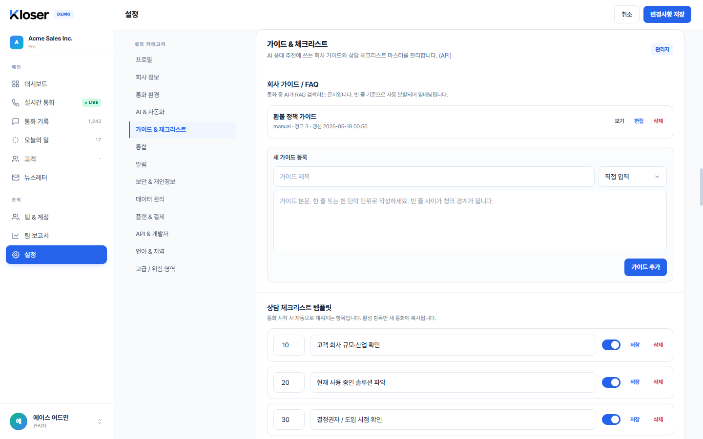
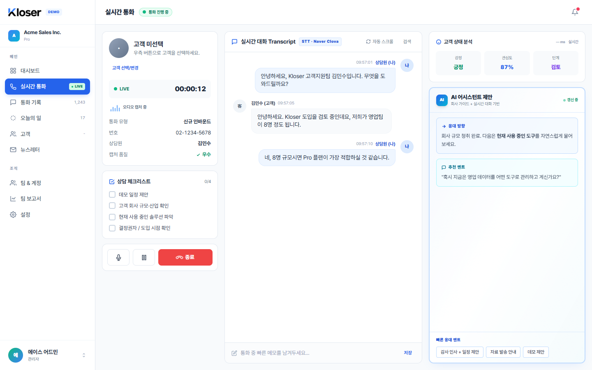
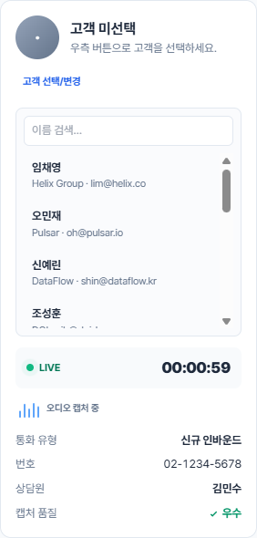
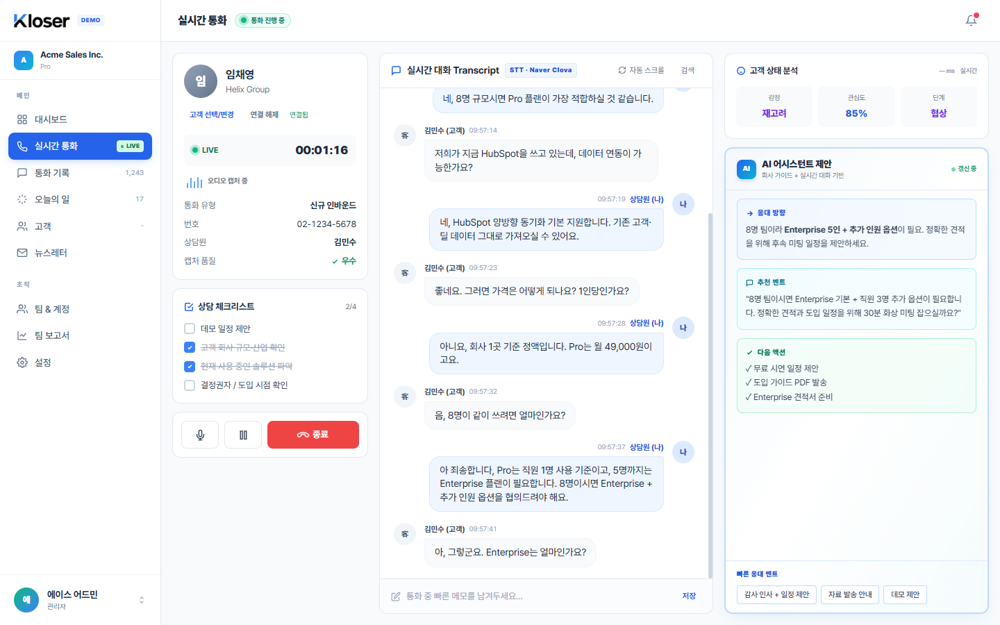
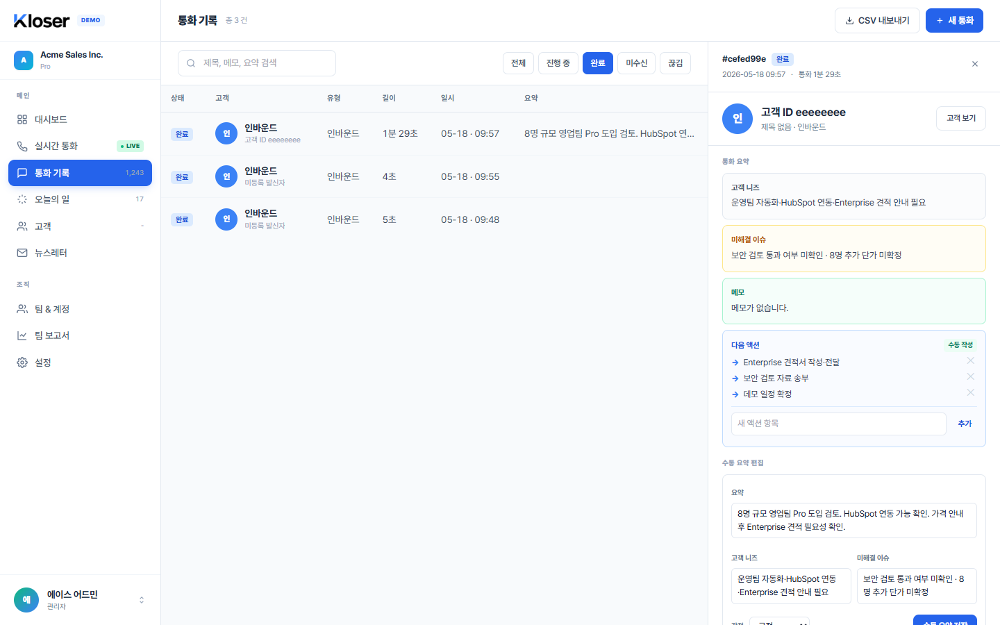

기능 01 · 설정 화면
회사 가이드 등록 — 한 번 적어두면 모든 통화에서 참고
관리자가 설정 → 가이드 & 체크리스트에 들어가서 회사 자료를 등록합니다. 환불 정책, 자주 묻는 질문, 제품 소개처럼 상담 중에 자주 참고하는 내용을 한 번 적어두면, 모든 상담원이 통화 중에 그 내용을 검색해서 활용할 수 있습니다.

사용 흐름
관리자가 가이드 제목과 본문을 적습니다. "환불 정책 가이드"처럼 알아보기 쉬운 제목으로, 본문은 한 단락씩 비워두면 자동으로 단위가 나뉩니다.
가이드 추가 버튼을 누르면 회사 전체에 즉시 반영됩니다. 다른 직원이 따로 동기화하지 않아도 그 회사의 모든 통화 화면에서 바로 활용됩니다.
통화 중에는 의미가 비슷한 내용을 자동으로 찾아 줍니다. 고객이 "환불 가능해요?"라고 물으면, 시스템이 가이드에서 환불 조건·일정 청크를 의미 기준으로 골라 응대에 활용합니다.
관리자만 등록·수정, 나머지는 보기만
가이드 등록·수정·삭제는 관리자만 가능합니다. 매니저·일반 직원·조회 권한은 등록된 가이드를 볼 수 있지만 내용을 바꿀 수 없습니다.
다른 회사 가이드는 절대 안 보임
우리 회사 가이드는 우리 회사 직원들에게만 보입니다. 다른 회사가 등록한 가이드는 같은 시스템을 쓰더라도 검색 결과에 절대 섞이지 않습니다.
기능 02 · 설정 + 실시간 통화 화면
통화 체크리스트 — 통화마다 자동으로 떠서 하나씩 체크
관리자가 회사 표준 체크리스트를 한 번 만들어 두면, 새 통화가 시작될 때마다 그 회사의 모든 통화 화면 좌측에 자동으로 떠 있습니다. 상담원은 통화 중에 항목을 눌러 완료/미완료를 표시하고, 그 결과는 그 통화에만 남습니다 — 다른 통화에는 영향이 없습니다.

통화마다 따로 기록
A 통화에서 체크한 항목과 B 통화에서 체크한 항목은 서로 영향을 주지 않습니다. 각 통화의 진행 상황이 그 통화 안에만 남습니다.
템플릿 수정은 다음 통화부터
관리자가 표준 체크리스트 항목을 바꿔도 이미 진행 중인 통화에는 영향이 없습니다. 다음에 시작되는 새 통화부터 새 내용이 반영됩니다.
누가 언제 체크했는지 기록
항목 하나를 체크하면 "누가, 몇 시에 체크했는지"가 함께 기록됩니다. 통화 기록 화면에서 나중에 다시 확인할 수 있습니다.
기능 03 · 실시간 통화 화면
통화 ↔ 고객 연결 — 누구와 통화 중인지 즉시 매칭
통화 화면 좌측의 고객 선택/변경 버튼을 누르면 우리 회사 고객 목록이 떠서 검색·선택할 수 있습니다. 한 명을 선택하는 순간 이 통화가 그 고객의 통화로 기록되고, 통화 기록·고객 상세에서 함께 묶여 보입니다.


통화 중 또는 사후에 자유롭게
인바운드 첫 응대처럼 처음에는 누군지 모를 수 있습니다. 통화 중에 알아내서 연결해도 되고, 통화가 끝난 뒤 기록에서 사후에 연결해도 됩니다.
연결자·연결 시각도 함께 남음
"누가 이 통화를 그 고객 건으로 묶었는지" 기록이 남습니다. 잘못 매칭한 경우 다시 해제·재연결할 수 있고 이력은 보존됩니다.
기능 04 · 통화 기록 화면
통화 후 정리 — 요약·니즈·이슈·다음 할 일
통화 기록 화면에서 통화 한 건을 클릭하면 우측에 상세 패널이 펼쳐집니다. 여기서 통화 요약·고객 니즈·미해결 이슈·감정을 직접 적어 저장하고, 다음 액션(다음에 할 일)을 만들어 두고 완료 표시할 수 있습니다.

한 번에 적는 4가지
요약(이 통화의 핵심) · 고객 니즈(고객이 원하는 것) · 미해결 이슈(다음에 풀어야 할 것) · 감정(고객이 어느 단계에 있는지) 네 가지를 한 번에 저장합니다. 적은 시각도 함께 기록됩니다.
다음 액션 = 후속 To-Do
"Enterprise 견적서 작성·전달"처럼 짧은 한 줄로 추가하면 다음 액션 목록에 쌓입니다. 처리됐으면 누르고 완료 표시 — 누가·언제 했는지가 함께 남습니다.
사람이 적은 요약은 보호됩니다
나중에 AI가 자동으로 요약을 만들어 주는 기능이 들어오더라도, 사람이 직접 적은 요약은 자동으로 덮어쓰지 않습니다. "내가 쓴 정리"가 지워질까 걱정할 필요가 없습니다.
AI 추천 이력도 같은 패널에서
통화 중에 AI가 추천했던 응대 멘트가 그대로 기록에 남아 있어, 통화가 끝난 뒤 같은 상세 패널에서 "어떤 추천이 떴고 어느 것을 썼는지" 다시 볼 수 있습니다.
기능 05 · 배경에서 동작
통화가 살아 있다는 신호 — 끊겨도 기록은 보존
라이브 통화 화면이 켜져 있는 동안 짧은 신호가 주기적으로 서버에 갑니다. 서버는 "이 통화가 마지막으로 살아 있던 시각"을 그때마다 갱신해 둡니다. 브라우저가 갑자기 꺼지거나 인터넷이 끊겨도 이미 들어간 통화·발화는 그대로 남고, 이 신호가 끊긴 시점을 기준으로 나중에 "끊긴 통화"로 정리할 수 있게 됩니다.
통화 한 건이 보내는 신호 — 예시
신호가 끊겨도 통화·발화는 남습니다
살아 있음 신호는 "통화 상태 확인용" 신호일 뿐입니다. 통화 중에 이미 들어간 대화 내용·메모·체크리스트 결과는 신호와 무관하게 그대로 보존됩니다.
현재 단계의 한계
오래 살아 있음 신호가 안 오는 통화를 자동으로 끊김으로 정리해 주는 기능은 다음 단계(Phase 6)에서 닫혔습니다. Phase 5에서는 신호를 기록하는 부분까지만 동작합니다.
기능 06 · 권한 규칙
매니저는 같은 팀 통화까지만
매니저가 통화를 변경할 수 있는 범위가 같은 팀 상담원의 통화로 좁혀집니다. 고객 연결, 체크리스트 토글, 수동 요약 작성, 다음 액션 작성 — 통화에 변화를 주는 모든 동작이 같은 규칙을 따릅니다.
누가, 어디까지 만질 수 있나
"내 통화"는 통화에 상담원으로 박혀 있는 사람이 본인일 때를 말합니다. 매니저의 팀이 바뀌면 바뀐 즉시부터 만질 수 있는 통화 범위도 따라 바뀝니다.
화면 단위 정리
화면별 — 어디까지 진짜로 동작하나
Phase 5 시점에서 각 화면이 어디까지 실제 데이터로 움직이고, 어디부터 아직 데모 예시인지 정리했습니다. "다음" 표시는 이 단계에서는 비어 있었지만 다음 Phase 6에서 닫힌 영역입니다.
다음 AI 추천 자동 생성 · 끊긴 통화 자동 정리
다음 다음 액션 삭제 · 통화 후 AI 자동 요약
다음 매니저 팀 요약 보고서 (Phase 6 별도 페이지)
다음 단계
Phase 6 — 자동화로 채워질 부분
Phase 5는 사람이 직접 하는 흐름을 갖춰 둔 단계입니다. 다음 Phase 6에서는 그 위에 자동화가 올라가서, 사람이 안 해도 되는 일은 백그라운드가 대신 처리합니다.
통화 후 AI 자동 요약
통화가 끝나면 백그라운드에서 요약·고객 니즈·이슈를 자동으로 채워 넣어 줍니다. 사람이 직접 적은 요약은 그대로 보호되고, 비어 있던 통화만 자동으로 채워집니다.
끊긴 통화 자동 정리
살아 있음 신호가 일정 시간 안 오면 통화를 "끊김"으로 마감 처리합니다. 진행 중 통화 KPI가 자연스럽게 정상화됩니다.
실제 음성·AI 사용
현재 일부 영역이 시뮬레이션으로 동작합니다. 다음 단계부터 실제 음성 인식 서비스와 AI가 연결되어 진짜 통화 내용으로 동작합니다.
다음 액션 삭제
잘못 만든 다음 액션을 깔끔히 지울 수 있는 버튼이 추가됩니다. Phase 5에서는 만들기·완료까지만 가능했습니다.
매니저 팀 요약 보고서
매니저가 자기 팀의 통화 활동을 한 화면에서 볼 수 있는 별도 보고 페이지가 추가됩니다. Phase 5에서 좁힌 매니저 권한이 그대로 적용됩니다.
AI 추천 자동 갱신
통화 중 AI 추천 카드가 시뮬레이션 대신 실제 회사 가이드를 근거로 자동으로 새로 떠오릅니다. 추천 이력은 통화 기록 상세에서 그대로 다시 볼 수 있습니다.
이전 단계가 궁금하면 Phase 1 / Phase 2 / Phase 3 / Phase 4 가이드를 참고하세요.